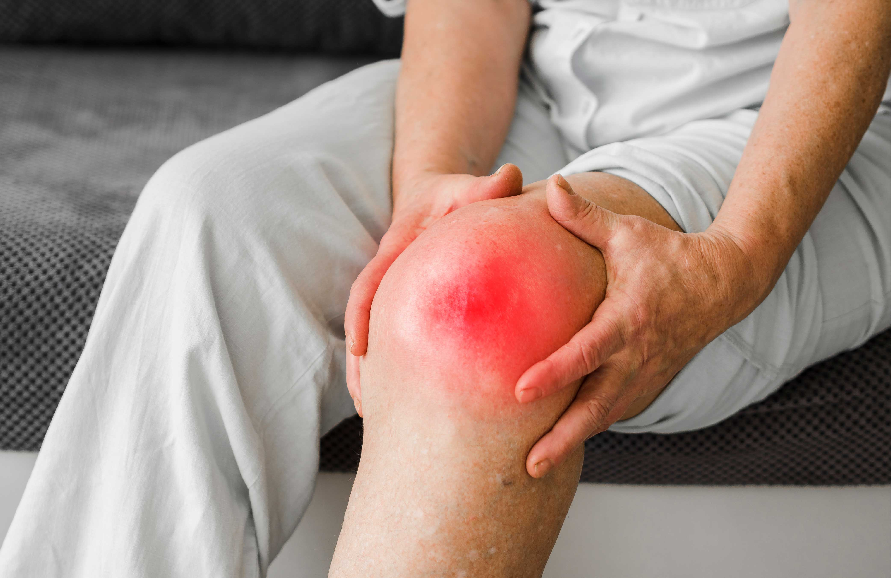
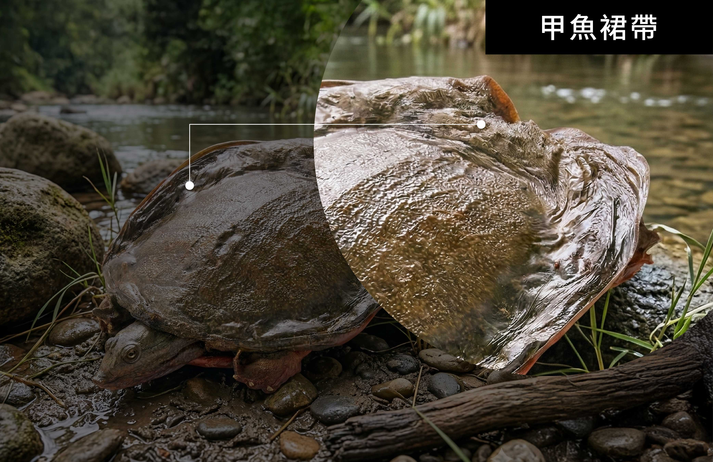
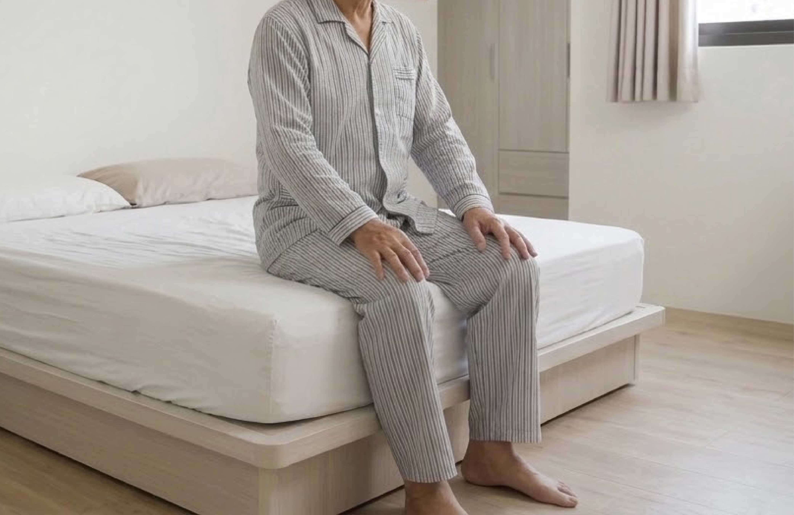
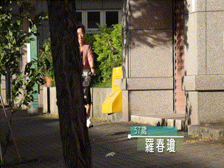
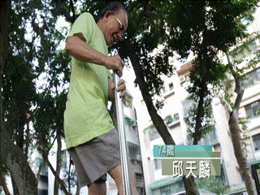

膝蓋痛了二十年，他說：「住四樓沒電梯，現在我每天來回兩趟都沒問題。」
陳伯伯今年七十三歲，住在台中的老公寓四樓，沒有電梯。二十年前的一場車禍，讓他的右膝從此沒有好過。 當時撞擊力道太大，膝蓋韌帶受損；術後雖然恢復了行走功能，但醫師說得很直白：
「這個膝蓋，以後一定會退化得比別人快。」
那時他五十多歲，還在工地當工頭。聽完只是點點頭，繼續照常上班，覺得沒什麼大不了。 誰知道，過沒幾年，膝蓋就開始「討債」了。
每次天氣要變，膝蓋就先知道
起初是上下樓梯時，右膝有悶悶的壓迫感；彎曲時偶爾會聽到「喀」一聲。他以為是正常老化，也沒特別理會。
直到六十歲退休後，一旦走路走多一點，膝蓋就腫起來。去診所，醫師說是退化性關節炎：關節腔軟骨磨損， 加上車禍留下的舊傷，比一般人退化得更嚴重。

「每次要下雨之前，我的膝蓋就先痛起來，比氣象預報還準。」
他試過很多方法：止痛藥、藥布、復健、打玻尿酸。剛打完針效果不錯，但幾個月又回到原點，而且效果一次比一次短暫。 醫師說，再不行就要考慮換人工關節了。
「我問醫生，換了以後可以跟正常人一樣嗎？醫生說，不一定，要看個人狀況。」那一刻，他心裡涼了一半。
兒子看不過去：「爸，你先試試看，不行再說。」
去年秋天，兒子聽同事分享：家裡長輩最近都在討論「甲魚膠」，說跟關節的組成成分很接近，比其他動物的膠原更濃。
兒子心想「真的那麼厲害嗎？不然拿回家給爸爸試試看」
陳伯伯半信半疑。他試過太多了：葡萄糖胺、軟骨素、各種關節保健品，效果都很有限。
但兒子說：「你就加減試試看，不行再說嘛！」
「甲魚？那不是冬天進補用的嗎？」
他印象中的甲魚，就是老一輩說的「鱉」，熬湯補身體用的。怎麼會跟膝蓋扯上關係？ 兒子說重點不是整隻甲魚，而是殼邊緣那一圈軟組織，叫「裙帶」。

他用白話解釋：你想像關節裡有一塊吸了很多水的海綿，讓骨頭和骨頭之間不會直接磨到一起； 那塊「海綿」靠的就是蛋白聚醣撐起來。年輕時它飽飽的，關節就滑順；年紀大、受過傷或動過刀， 流失速度更快，關節就失去緩衝，開始乾澀、卡卡、天氣一變就不對勁。
膠原蛋白也是同樣道理：韌帶、肌腱、軟骨的彈性，背後靠的都是結構在撐。
「所以你吃葡萄糖胺沒什麼感覺，可能是因為那不是你最缺的那一塊。」
他不知道這說法對不對，但覺得有幾分道理，於是開始固定補充。
第一個月：沒有很明顯，但有一點點不一樣
吃的前兩週，他沒有特別感覺到什麼變化。「我跟兒子說好像沒什麼感覺，他說再等等看，這種東西要讓身體慢慢吸收。」
到了第三週，他發現一件小事：原本每天早上起床，右膝都要「暖機」一段時間， 先坐在床邊幾分鐘，讓關節慢慢活動開來才敢站起來。那週他發現暖機時間好像縮短了
「不是完全不用，但沒有以前那麼久了。」

第三個月：那個「天氣預報」的感覺淡了
持續三個月後，有次梅雨季太太問他：「今天天氣不好，你膝蓋還好嗎？」他想了想說：「好像還好。」 太太愣了一下：「你之前不是說每次下雨前都會很痛？」
他自己也有點驚訝，那種「膝蓋比氣象台更靈驗」的感覺，沒以前那麼強烈了。 上下四層樓梯，不再需要一階一階停下來緩衝；走平路時那種悶脹感也減輕不少。
「我現在每天早上可以自己下樓買早餐，回來再自己走上來。這個對我來說就很夠了。」
他說這話時笑了。不是誇張的開心，而是一個長輩找回一點點日常自主的尊嚴。
「早知道，我早一點就開始顧了。」
這是他現在最常掛在嘴邊的話。不是後悔，只是感慨。 他說，年輕的時候覺得吃這些東西是老人家擔心過了頭，自己的身體自己知道，出問題再說就好。但後來才懂，關節這東西不一樣，它不像感冒，發燒了吃個藥就退，等到真的出狀況，往往已經退化了好幾年了。
尤其像他這種動過刀的，本來就是高風險群。醫師當年那句「以後一定比別人退化得快」不是嚇他的，是真的。
他現在時不時會跟左鄰右舍、廟口的老朋友提起這件事。特別是那些走路開始不太順、上樓梯需要扶著牆的，他都會多說兩句：「趁還走得動的時候就開始顧，不要等到走不動了再說，那時候才麻煩。」
七十三歲，他只要求一件事
採訪結束前，陳伯伯說了一句話：
「我不是希望膝蓋變得跟年輕時一樣。那個不可能了。但我希望在我還能走的時候，能走得舒服一點，不要那麼快就走不動。這樣就很好了。」
這句話，大概說出了很多同齡人的心聲。
關節的退化速度，是可以被改變的。不要以為動了就痛，就得這樣一輩子了，從現在開始，真的不算晚。
還有這些人，也有同樣的感受
▍羅女士，57歲，台南｜退化性關節炎八年
「我是家庭主婦，每天買菜、煮飯，膝蓋用了一輩子。六十歲開始感覺到退化，兩腳都有問題，右腳比較嚴重。 醫師說我的軟骨已經磨得很薄，叫我要少走路、少爬樓梯。但我不可能不動，家裡還有那麼多事要做。 吃了三個月之後，最明顯的改變是早上起來不用扶著床頭也敢站起來，腳踩地的感覺比較穩，蹲下去撿東西也沒有以前那麼怕。」

▍邱先生，74歲，桃園｜膝關節手術後復健中
「我是打籃球受傷的，四十幾歲半月板就出問題，動了一次刀。後來年紀大，右膝又開始退化，去年又住院做了手術。 復健科醫師說術後保養很重要，除了復健運動，也要注意補充關節需要的成分。我太太幫我查了很多資料，後來我開始每天補充。 現在術後大概八個月，走路已經不需要用拐杖，上下樓梯也不會痛了。我覺得恢復的速度比我預期的好很多。」

張小姐 3 天前
我媽媽68歲，變冷就膝蓋痛這件事困擾她好幾年了。試過很多方法都說沒什麼感覺， 上次帶她去骨科，醫生說是典型的關節腔潤滑不足。蛋白聚醣保水這個概念感覺很有道理， 打算讓她試試看，希望有幫助。
陳先生 1 週前
我自己就是這樣，五十幾歲車禍開過刀，以為好了就沒事，結果六十歲開始退化得比別人快。 現在爬樓梯還是很辛苦，真的是要趁走得動就開始保養。
王太太 2 週前
我老公看完這篇說他也想試，希望他也能走得順一點，多跟兒子女兒出去外面走走。
李先生 ｜58歲 1 天前
我父親今年78，退化性關節炎加上骨刺，走路一跛一跛的，不肯看醫生又不肯吃藥。 看到這篇文章傳給他看，他說「他跟我一樣」，算是第一次願意認真考慮保養的事。謝謝這篇文章。